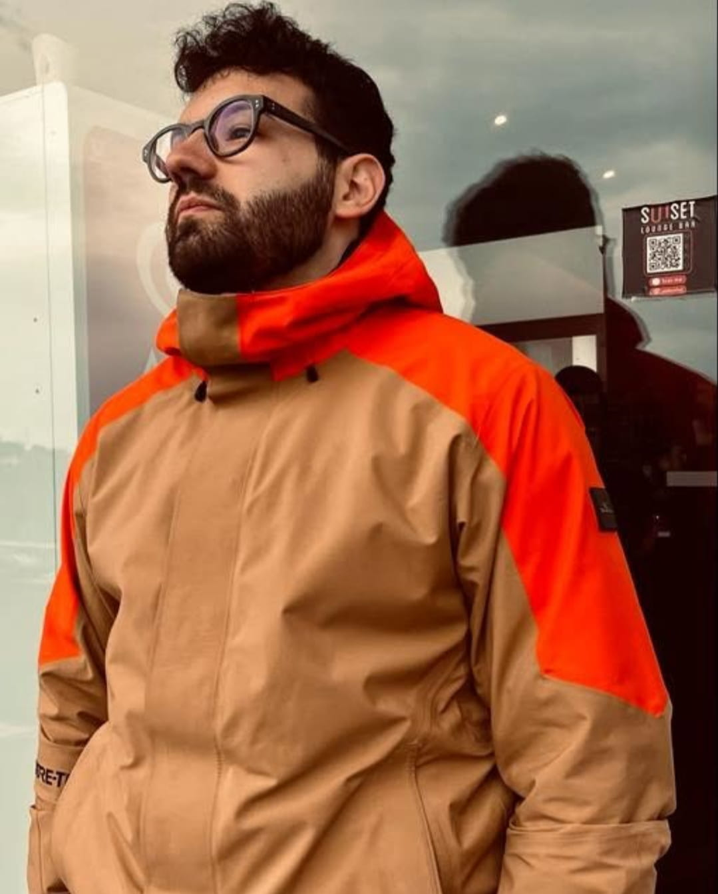

CHI SONO
Mi chiamo Giuseppe Castellaneta ho 28 anni e da poco ho iniziato ad avvicinarmi al settore della programmazione. Grazie al corso di Start2impact cose che credevo fossero impossibili ora iniziano a sembrarlo meno. Sono ancora un neofita e la strada è sicuramente lunga però giorno dopo giorno acquisisco nuove conoscenze e per una persona curiosa come me è una grande soddisfazione.

HOBBY
Il mio hobby preferito è sicuramente guardare film e serie tv. Quando la storia è avvincente e coinvolgente mi appassiono e mi sento come se fossi dentro la storia stessa. Per il resto del mio tempo libero mi piace passarlo in compagnia di amici e facendo sport.
PASSIONI
Sono da sempre appassionato di tecnologia in generale ma non ho mai avuto il tempo di approfondirla. Ora che ho iniziato a studiare il mondo della programmazione, mi sento più motivato e appassionato di quanto non lo fossi prima. L'intelligenza artificiale poi è una delle cose che mi affascinano di più, ancora tutta da scoprire non solo per me ma anche per quello che sarà il futuro dato le sue enormi potenzialità.